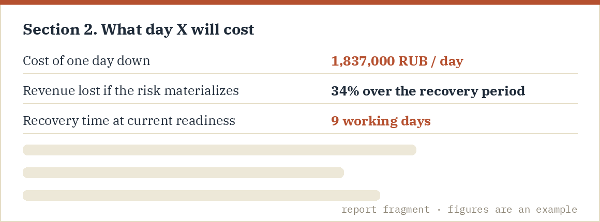
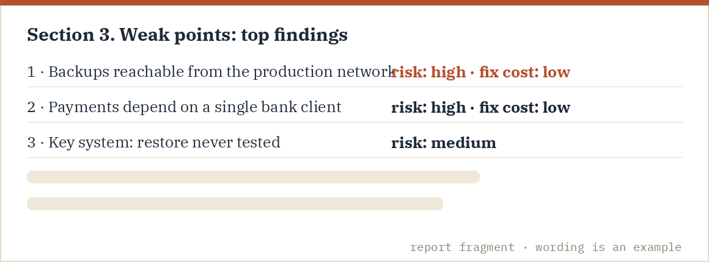
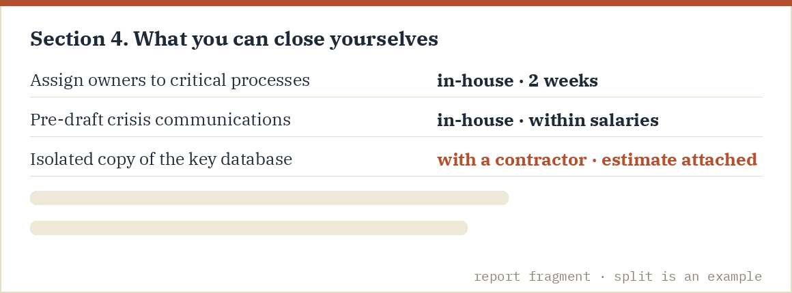
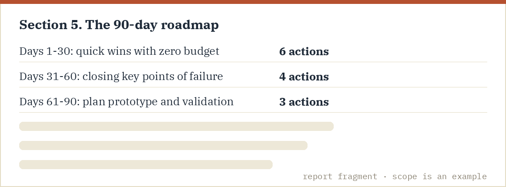

What it is and who it is for
The stress test is for executives and owners of mid-sized companies who want an honest verdict on resilience and a concrete plan — not a consulting subscription. We come for two days, test your continuity «in combat» and hand over a report with numbers. A significant share of the weak spots can be closed by your own team through organizational measures — and we show exactly which ones and how.
The stress test is designed as a complete product: its result is a plan your team executes independently, with no mandatory follow-ons. A significant share of the recommendations is deliberately framed as in-house organizational steps — that is the product's construction. If you later want support on specific steps, it is available, but that is a separate decision that stays with you.
How the 2 days run
Day 1. Diagnostic and economics. A full continuity assessment — over one hundred questions across six areas: critical processes, IT and data, people, suppliers, plans and financial resilience (not the free 5-minute quiz — a deep review with key-people interviews). In parallel we price the economics: the cost of one day down and the share of revenue you lose if the risk materializes — in money, from your management accounts.
Day 2. The «Day X» stress simulation: a ransomware attack on your company. The most revealing scenario of our time — files will not open, ransom notes on screens, ERP and email down — worked through in a live, facilitated dialogue with the CEO and the key team: who notices first, who has the authority to decide, what we tell staff and clients, how and how fast we recover. It is a tabletop review — a calm, structured conversation, no theatrics and no stopwatches; production systems are never touched, yet the decisions, authority gaps and open questions are entirely real.
Note: if ransomware is not your industry's worst nightmare, we will tailor an equivalent scenario — a site accident, a key supplier loss, an IT outage. We still recommend ransomware: it stops everything at once and exposes readiness most honestly.
What the CEO gets
A concrete calculation of what day X costs: cost of downtime, revenue at risk, realistic recovery time — numbers, not «high/medium/low».

A list of today's weak points, sorted by risk cost versus cost to fix.

A «do it yourself / with help» split: which gaps close through organizational measures within existing salaries — and how. In our experience a substantial share of findings closes with zero extra budget.

A 90-day plan the team can run on its own.

Deliverables
- The CEO report (10-15 pages, executive language).
- Damage priced in money: cost of one day down and revenue at risk.
- A model of how the risk propagates through business processes.
- A single-points-of-failure map — IT, people, suppliers, sites.
- A resilience score: a 0-100 index across six areas (your baseline for future measurements).
- Simulation observations: where decisions stalled, which authorities were undefined, a realistic recovery time estimate.
- A business continuity plan prototype tailored to your operations.
- A first-24-hours checklist and pre-drafted crisis communications.
- A 90-day resilience roadmap with the «yourself / with a contractor» split.
Pricing
FAQ
Why ransomware? It is the only scenario that stops every process at once and tests IT, people, authority and communications simultaneously. Having rehearsed it, you are ready for most simpler failures.
How much of our time does it take? A management team of 6-10: day 1 — interviews of 1-1.5 hours each; day 2 — a single 3-4 hour simulation block. Operations do not stop.
Will you push us into a big project afterwards? No. The report and the plan are a self-sufficient result, and the «do it yourself» split is its centerpiece. If you later choose the resilience dashboard or team training — those are separate decisions, made without pressure.
Can it be done remotely? Day 1 — yes. Day 2 works best on site; for distributed companies we run a hybrid.